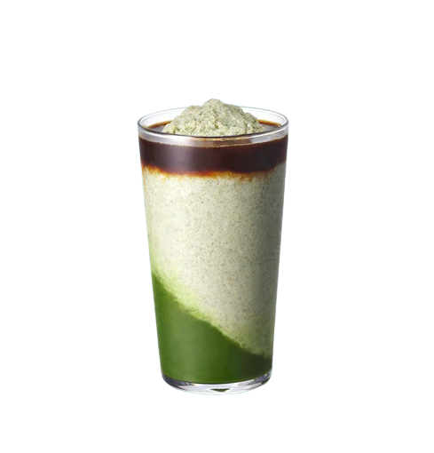

ただ一杯いのコーヒーじゃない
それはスタバックス
FIND YOUR TASTE. Our story begins in 1971 along the cobblestone streets of Seattle’s historic Pike Place Mconncarket. It was here where Starbucks opened its first store, offering fresh-roasted coffee beans
詳細
